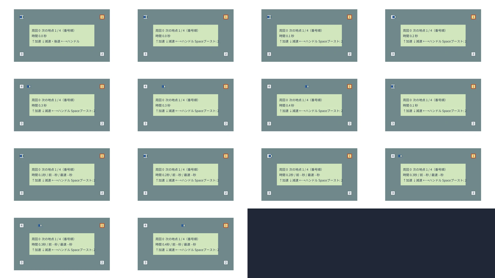
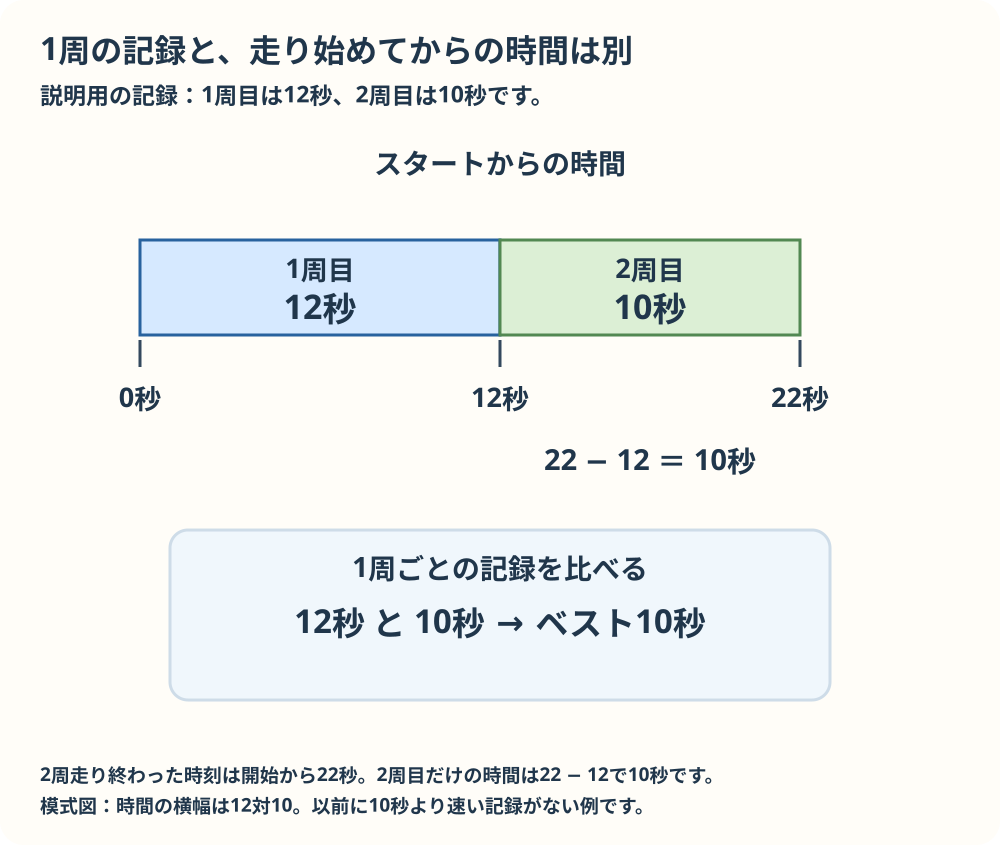

周回タイムアタックの発展
基本の完成版から3つの機能を順番に追加します。
始める前に
基本編の完成版から始めます。ZIPを展開してできたフォルダーでindex.htmlを開きます。ZIPには基本編の3ファイルが入っています。
WindowsでZIPを展開する（動画）
自分で作った基本版でも同じ内容なら使えます。
各段階の小作業を上から順に、作業用の script.js で行います。目印を探して、示されたコードを追加または置き換えてください。保存したら index.html を開くか、再読み込みします。
ステップ 1：期間限定のブースト
このステップの見本を図で見る

このステップの見本
if (keys.ArrowUp) this.speed = Math.min(3, this.speed + 0.1);
変わったコードの一例（script.js）const maxSpeed = this.boostFrames > 0 ? 4.5 : 3;
見本で確かめること
Spaceで残り回数が1減り、加速中の最高速度が上がります。
目標
Spaceで短い間だけ最高速度を上げます。
ブーストの回数と残り時間を覚える
作業用フォルダーの script.js で、Car の constructor で向きと速さを初期化する行の下に追加します。
目印
this.angle = 0;
this.speed = 0;追加するコード
this.boostFrames = 0;
this.boosts = 2;boostFrames は効果が残る更新回数、boosts は使える回数です。最初は残り0フレーム、2回です。Rで車を作り直すと残り2回に戻ります。
効果中の最高速度を変える
作業用フォルダーの script.js で、車の update() にある上キーの加速行を置き換えます。
置き換える範囲
if (keys.ArrowUp) this.speed = Math.min(3, this.speed + 0.1);置き換えるコード
const maxSpeed = this.boostFrames > 0 ? 4.5 : 3;
if (this.boostFrames > 0) this.boostFrames--;
if (keys.ArrowUp) this.speed = Math.min(maxSpeed, this.speed + 0.1);残り時間があるとき最高速度を4.5、それ以外は3にします。-- は1減らす書き方です。
残り回数を表示する
作業用フォルダーの script.js で、draw() の走行中の操作案内を置き換えます。
置き換える範囲
else ctx.fillText("↑加速 ↓減速・後退 ←→ハンドル", 205, 275);置き換えるコード
else ctx.fillText("↑加速 ↓減速 ←→ハンドル Spaceブースト: " + car.boosts, 205, 275);Spaceによるブースト操作と残り回数を画面に表示します。
Spaceでブーストを始める
作業用フォルダーの script.js で、keydown でRを処理する行の下に追加します。
目印
if (!event.repeat && event.key.toLowerCase() === "r") { start(); return; }追加するコード
if (event.code === "Space" && !event.repeat && state === "playing" && car.boosts > 0 && car.boostFrames === 0) {
event.preventDefault();
car.boosts--;
car.boostFrames = 60;
return;
}走行中で残り回数があり、効果中でないときだけ使えます。押しっぱなしの繰り返しは除き、回数を1減らして60フレームの効果を始めます。これは60回の更新で、60秒という意味ではありません。
保存後の確認
保存してゲーム画面を更新する（動画）
index.html を再読み込みします。Spaceで残り回数が1減り、加速中の最高速度が上がります。Rで2回に戻ります。 この段階の見本を開く
小さな練習
60を90に変えて、続く時間を比べます。 練習後はコードを元に戻してください。
ステップ 2：道路外で減速する
このステップの見本を図で見る
このステップの見本
} else {
変わったコードの一例（script.js）if (!course.contains(nextX, nextY)) this.speed *= 0.9;
見本で確かめること
道路から外れると遅くなり、戻ると加速できます。
目標
道路から外れると減速し、画面の端では止まります。
画面外は止め、道路外は減速する
作業用フォルダーの script.js で、車の update() で道路外を止めていた条件全体を置き換えます。
置き換える範囲
if (course.contains(nextX, nextY)) {
this.x = nextX;
this.y = nextY;
} else {
this.speed = 0;
}置き換えるコード
if (nextX < 0 || nextX > canvas.width || nextY < 0 || nextY > canvas.height) {
this.speed = 0;
} else {
this.x = nextX;
this.y = nextY;
if (!course.contains(nextX, nextY)) this.speed *= 0.9;
}次の位置が画面外なら速さを0にします。画面内では進み、道路の外なら速さを0.9倍にして減速します。
保存後の確認
道路から外れると遅くなり、戻ると加速できます。画面の外へは出ません。 この段階の見本を開く
小さな練習
0.9を0.8に変えて、道路外での減速を比べます。 練習後はコードを元に戻してください。
ステップ 3：ラップとベストを記録する
このステップの見本を図で見る
このステップの見本
ctx.fillText("時間 " + (elapsed / 1000).toFixed(1) + " 秒", 205, 240);
変わったコードの一例（script.js）const lastText = lastLap === null ? "--" : (lastLap / 1000).toFixed(1);
見本で確かめること
番号順に2周すると各周の時間と最速が表示されます。
目標
1周の時間と、ページを開いている間の最速を記録します。
ラップの時間を覚える
作業用フォルダーの script.js で、先頭の変数宣言を置き換えます。
置き換える範囲
let course, car, keys, checkpoints, nextCheckpoint, laps, state, startTime, elapsed;置き換えるコード
let course, car, keys, checkpoints, nextCheckpoint, laps, state, startTime, elapsed, lapStart, lastLap;
let bestLap = null;lapStart はその周の開始時刻、lastLap は直前の周、bestLap は最速の時間です。null はまだ記録がないことを表します。
周の開始時刻を用意する
作業用フォルダーの script.js で、start() で開始時刻を保存する行の下に追加します。
目印
startTime = performance.now();追加するコード
lapStart = startTime;
lastLap = null;最初の周はゲームの開始時刻から測ります。直前の周はまだないので null です。bestLap は再挑戦しても残ります。
1周の時間と最速を更新する
作業用フォルダーの script.js で、update() の周回数を増やす行の下に追加します。
目印
laps++;追加するコード
lastLap = performance.now() - lapStart;
if (bestLap === null || lastLap < bestLap) bestLap = lastLap;
lapStart = performance.now();現在時刻から周の開始時刻を引いて1周のミリ秒を求めます。最速が未記録、または今回の方が短ければ更新し、次の周の開始時刻を記録します。

1周目が12秒、2周目が10秒なら、走り始めてからの時間は合計22秒です。2周目だけの記録は22−12で10秒になります。1周ごとの記録を比べるので、以前に10秒より速い記録がなければ、ベストは10秒です。
時間の帯を12対10の長さで描いています。実際のコース配置や一定の走行速度を示す図ではありません。
ラップと最速を秒で表示する
作業用フォルダーの script.js で、draw() の時間表示を置き換えます。
置き換える範囲
ctx.fillText("時間 " + (elapsed / 1000).toFixed(1) + " 秒", 205, 240);置き換えるコード
const lastText = lastLap === null ? "--" : (lastLap / 1000).toFixed(1);
const bestText = bestLap === null ? "--" : (bestLap / 1000).toFixed(1);
ctx.fillText("時間 " + (elapsed / 1000).toFixed(1) + "秒 / 前 " + lastText + "秒 / 最速 " + bestText + "秒", 205, 240);記録がなければ "--"、あれば1000で割って秒にし、小数第1位まで表示します。
保存後の確認
番号順に2周すると各周の時間と最速が表示されます。Rで再挑戦しても最速は残ります。 この段階の見本を開く
小さな練習
表示の小数1桁を2桁に変えて比べます。 練習後はコードを元に戻してください。